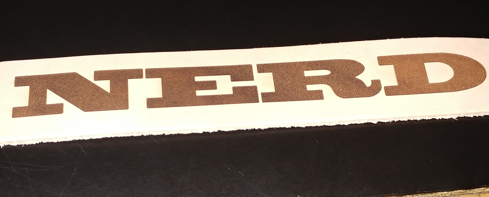
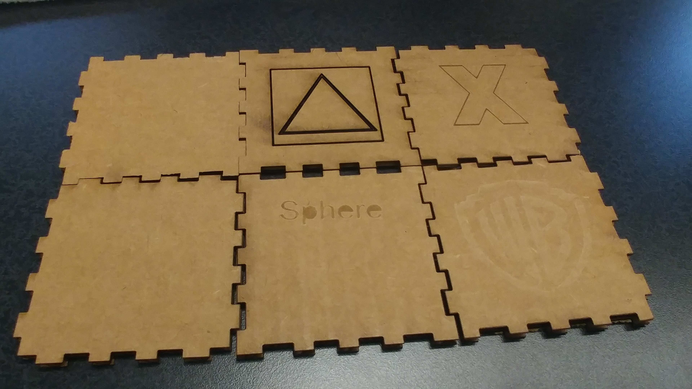

I wanted to make a coaster, but I also wanted to make a coaster, so I made both. To make the template, I measured the dimensions of the cork coaster and made a template corresponding to that.

To be totally honest with you, I don't think books are for nerds. Bookmarks follow the same standard as a coaster.
Oh wow! A box! The box template was made with the help of MakerCase. The images on the box were just imported from my computer
The press fit kit was made by creating three objects and hairlining rectangles onto them of according size so they fit into each other.

All objects created here were made in Corel Draw with Rastering or Vectoring. Rastering only needs the image to be imported onto the template and will be engraved. To vector, the image needs to be hairlined in order for the laser cutter to cut through the object. Almost everything can be engraved, but glass cannot be vectored because it will shatter.
Home